Префектура Канагава · Хаконэ, Сэнгокухара · где остановиться
The Hiramatsu в Сэнгокухаре: отель в Хаконэ, который вырос из ресторана
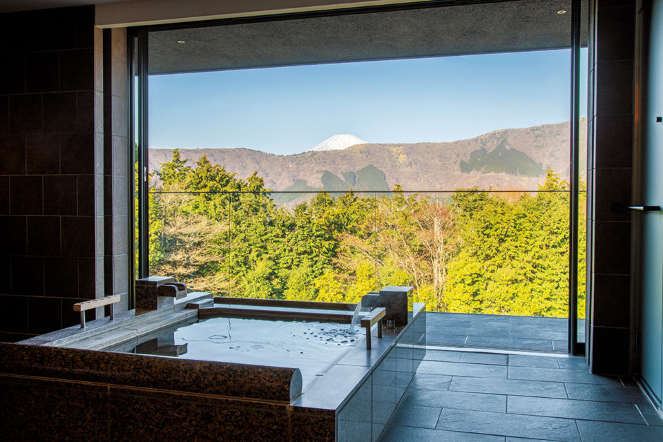
Ресторанная компания Hiramatsu начинала с маленького французского ресторана в Токио, а потом стала открывать отели. Её отель на плато Сэнгокухара похож на ресторан, в котором можно остаться на ночь.
История
От ресторана на 24 места к отелям
Японские гурманы при слове «Хирамацу» вспоминают ресторан «Хирамацу-тэй» в токийском районе Ниси-Адзабу. Его открыли в 1982 году, и именно с него началась вся компания. В зале было всего 24 места, а попасть туда мечтал каждый: изящный интерьер и отличная французская кухня собирали знатоков, и столики были заняты день за днём. Позже владелец и шеф-повар пристроил к ресторану галерею своего старшего брата и переименовал его в Restaurant Hiramatsu, ресторан высокой французской кухни. С этого и выросло большое дело.
Неизвестно, думал ли тогда основатель о собственных отелях. Но роскошная отделка, внимательный сервис и тяга к красоте во всём, что видишь в отеле, выдают ту же натуру.
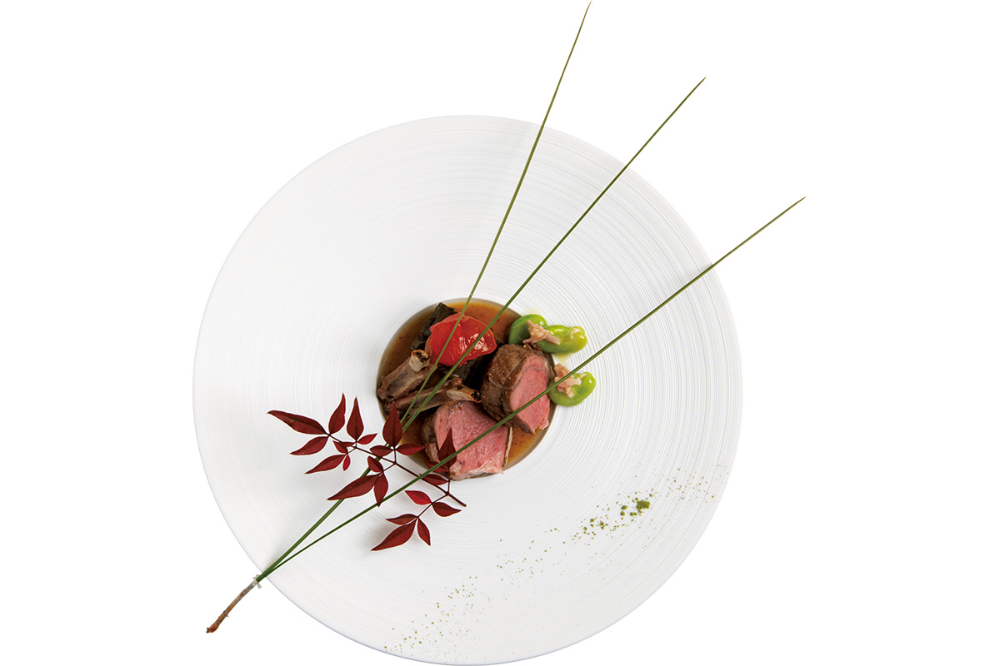
Отели Hiramatsu в те годы открывались один за другим: после отелей на побережье префектуры Миэ и в Атами очередь дошла до Сэнгокухары. Здесь сразу чувствуешь, сколько сил компания вкладывает в еду. Рыба и морепродукты приходят из рыбных портов Одавары и Мисаки, одних из крупнейших в Японии, а фирменные овощи растут на соседних полях. Без хорошей кухни не бывает хорошего отеля.
Кухня
Итальянский ужин в горах Хаконэ
В 2020 году у Hiramatsu были уже не только французские, но и итальянские рестораны, рестораны киотской кухни и кафе в лучших местах страны. В Сэнгокухаре подают блюда, которые сравнивают с картинами. Способ компании прост: брать продукт в сезон и доводить его вкус до предела. Её девиз звучит так: «Сначала радовать глаз, потом аромат, а после вкуса оставаться в памяти».
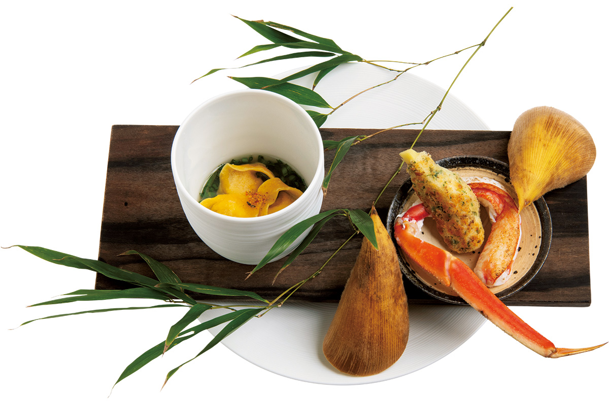
Хаконэ издавна славится едой. В старых отелях и курортах здесь отдыхали знаменитости, высокие чиновники и известные гурманы, и вместе с ними расцвела местная кухня. За перевалом лежат рыбные порты, откуда привозят свежий улов, а мягкий климат побережья у Манадзуру и полуострова Идзу даёт фирменные овощи, фрукты и мясо. Остальное Hiramatsu закупает у лучших поставщиков со всего мира.
На кухне стоит шеф-повар, много лет задававший тон итальянским ресторанам компании. Он раскрывает продукт, порой берёт приёмы японской кухни и добавляет к ним секреты французской. Так рождается его собственная итальянская кухня: смелая, как природа Хаконэ, и очень точная в ощущении сезона.
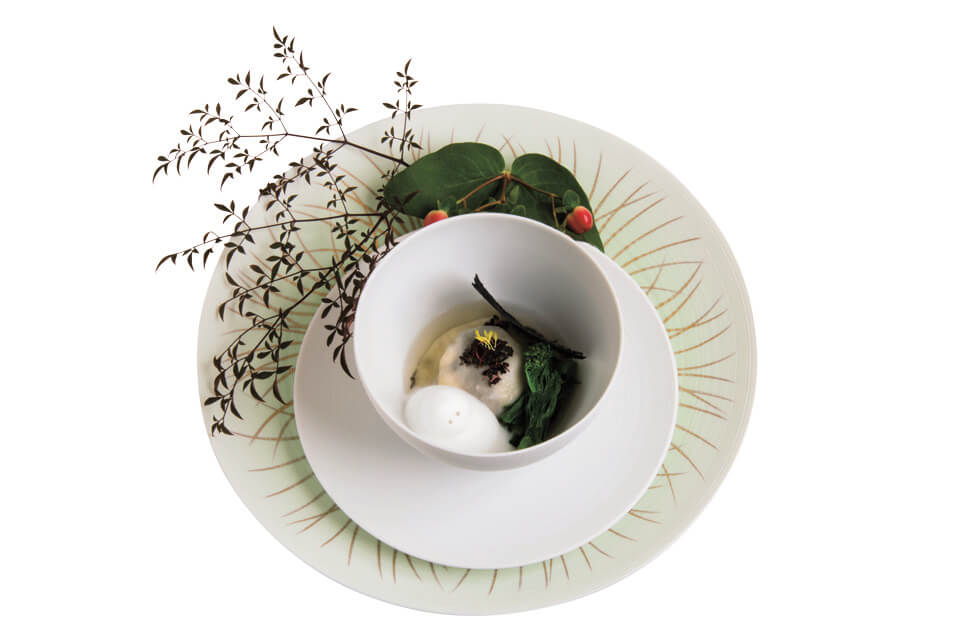
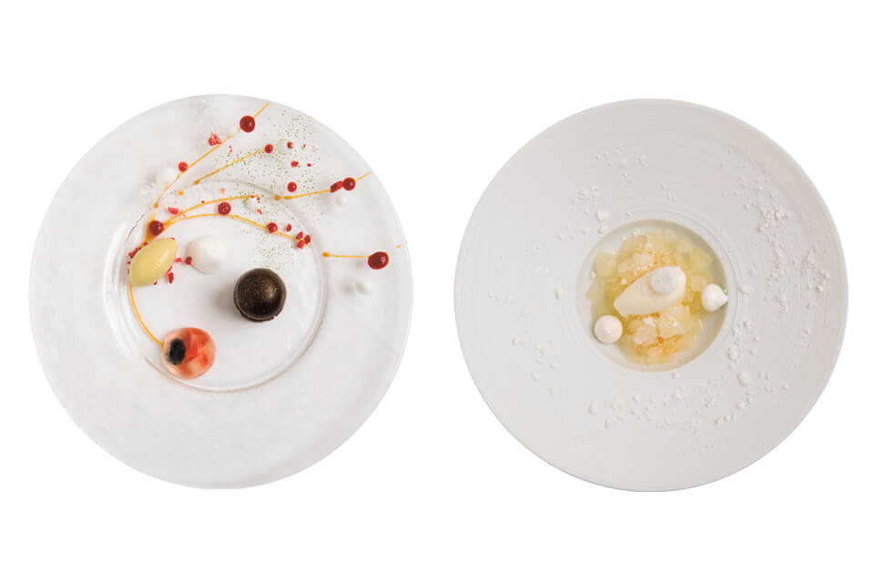
После ужина подают сладости: макаруны, хрустящие снаружи и тягучие внутри, шоколад с юдзу, мармелад пат-де-фрюи, конфеты, кекс и трюфели.
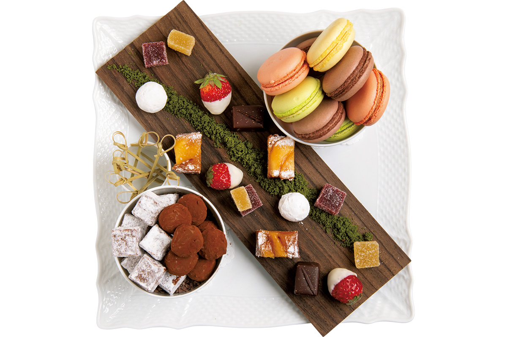
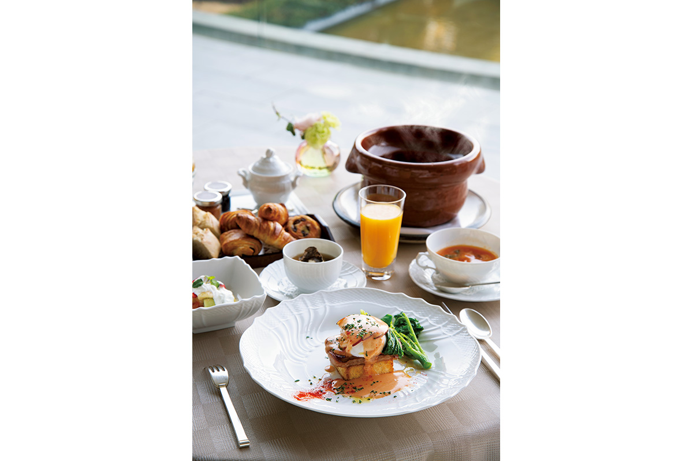
Отель
Тихое плато среди гор
Сэнгокухара лежит на холмистом плато внутри внешнего кольца гор вулкана Хаконэ. Отсюда видна величественная Фудзи, есть горячие источники и чистая подземная вода. На высоком месте плато, среди деревьев, стоит The Hiramatsu Hotels & Resorts Сэнгокухара, маленький отель класса люкс, где в 2020 году было всего 11 просторных номеров.
Когда-то здесь была деревня Сэнгокухара, а потом престижный дачный район. Поэтому и сегодня сюда любят приезжать путешественники, которые ищут уединения: это тихий и престижный уголок Хаконэ.
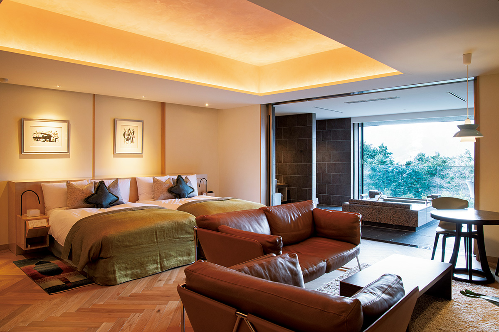
Гостиничный журналист, автор обзора, приехала сюда ясным днём в середине зимы. Золотая осенняя трава сусуки, которой славится Сэнгокухара, уже отцвела, но оставшиеся метёлки серебрились по всему плато.
Интерьеры отеля роскошны. Натуральный травертин и итальянская штукатурка антико стукко, прочная и подходящая к современной архитектуре, делают дизайн торжественным и при этом свежим.
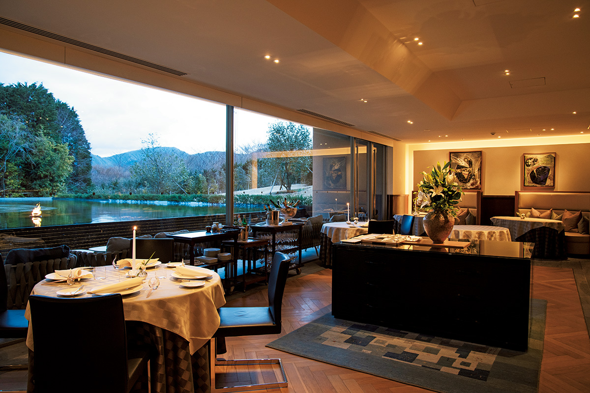
Ванны с проточной водой онсэна есть во всех номерах. Можно никуда не спешить и жить как на собственной даче, а это особенно ценно для взрослых гостей. Окна ванной открываются полностью, и ванна становится наполовину открытой.
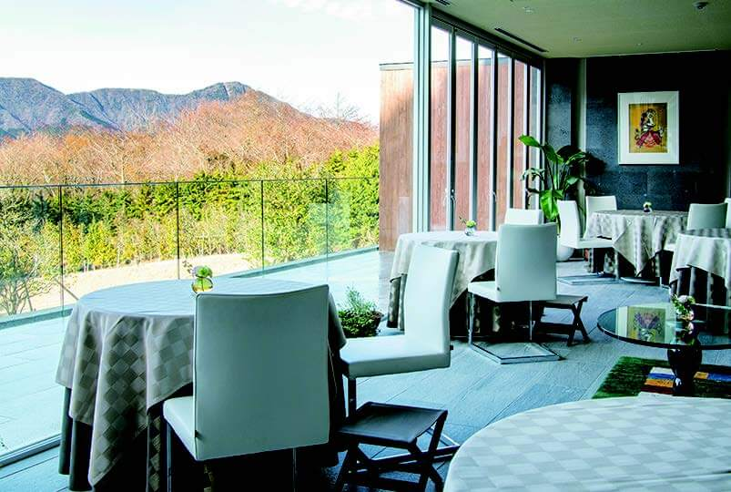
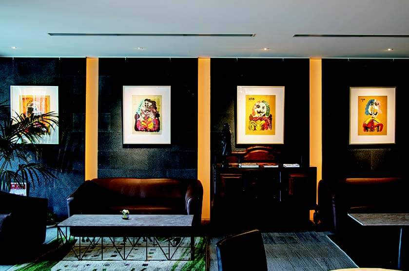
Отель похож на музей. Кроме Пикассо и Шагала, в номерах и общих залах висят работы Миро, Бюффе, Яёи Кусамы и других художников.
В 2020 году рядом готовился открыться второй корпус, «Резиденция». По официальному сайту, в 2026 году в отеле 20 номеров: 11 в главном здании и 9 в «Резиденции».
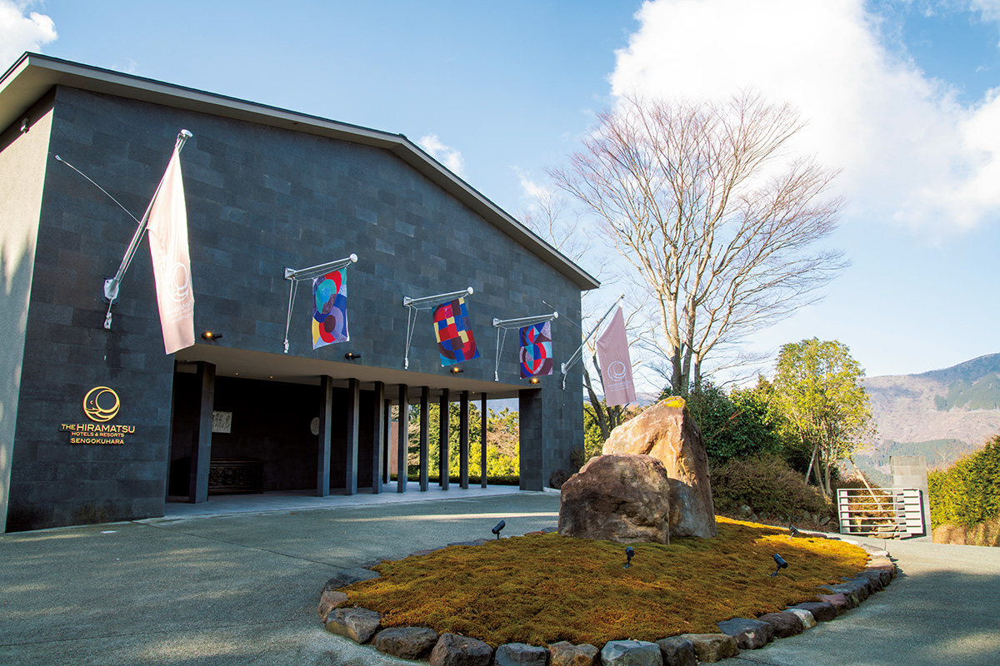
The Hiramatsu Hotels & Resorts Сэнгокухара
- Адрес
- префектура Канагава, Хаконэ, Сэнгокухара, 1245-337
- Телефон
- +81 460-83-8981
- Номера
- 11 (в 2020 году)
- Цены / Вход
- от 53 000 иен за ночь с ужином и завтраком, без налога и налога на онсэн (2020)
- Заезд / выезд
- 15:00 / 11:00
- Как добраться
- от станции Хаконэ-Юмото автобусом около 35 минут до остановки «Хаконэ кантори ирикути», дальше 3 минуты пешком; автобусом от автовокзала Баста Синдзюку около 2 часов до той же остановки; на машине около 25 минут от развязки Готэмба скоростной дороги Томэй
Фото: Канако Накамура, Ко Миядзи.